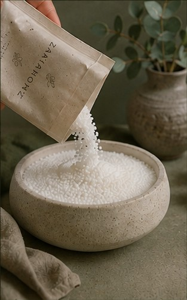
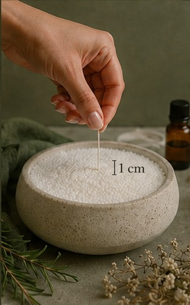
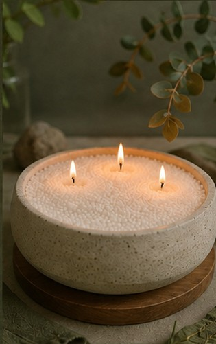
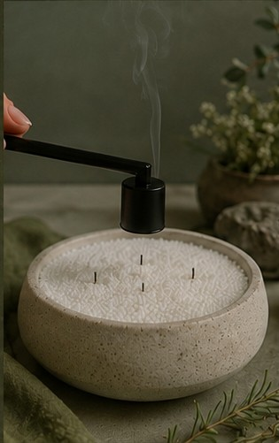
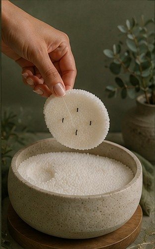

1
Vierte
Vierte la cera perlada en tu recipiente favorito.
VELAS PERLADAS
Cera perlada para crear un ritual cálido y simple en casa. Vierte. Coloca la mecha. Enciende. Renueva.
VER VELAS PERLADASCÓMO FUNCIONA

Vierte la cera perlada en tu recipiente favorito.

Colócala para que quede aproximadamente 1 cm sobre la superficie. Puedes agregar aromas alrededor.

Enciende tu vela y disfruta de una luz cálida y envolvente.

Apaga la mecha y deja enfriar para remover posteriormente la pequeña capa de cera solidificada.

Retira la cera usada, cambia la mecha por una nueva y vuelve a disfrutar.
LA COLECCIÓN
Blanco natural · recarga
PRÓXIMAMENTECera perlada · mechas · recipiente
PRÓXIMAMENTERenueva tu vela
PRÓXIMAMENTEZAKIA HOME
Zakia nace de pequeños rituales que hacen que un espacio se sienta más cálido, tranquilo y propio.
BUENO SABER
Son pequeñas partículas de cera diseñadas para verterse en un recipiente apto para velas y utilizarse con una mecha.
Sí. El concepto permite reemplazar la mecha utilizada y volver a aprovechar la cera limpia restante.
Utiliza únicamente recipientes estables, resistentes al calor y no inflamables, adecuados para el uso con velas.